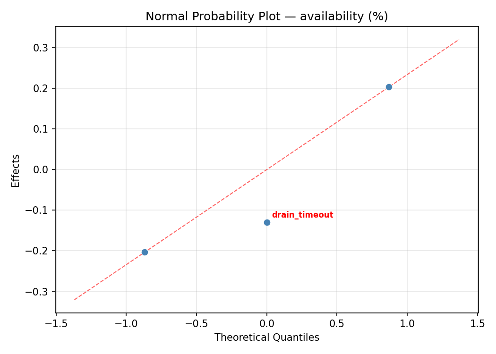
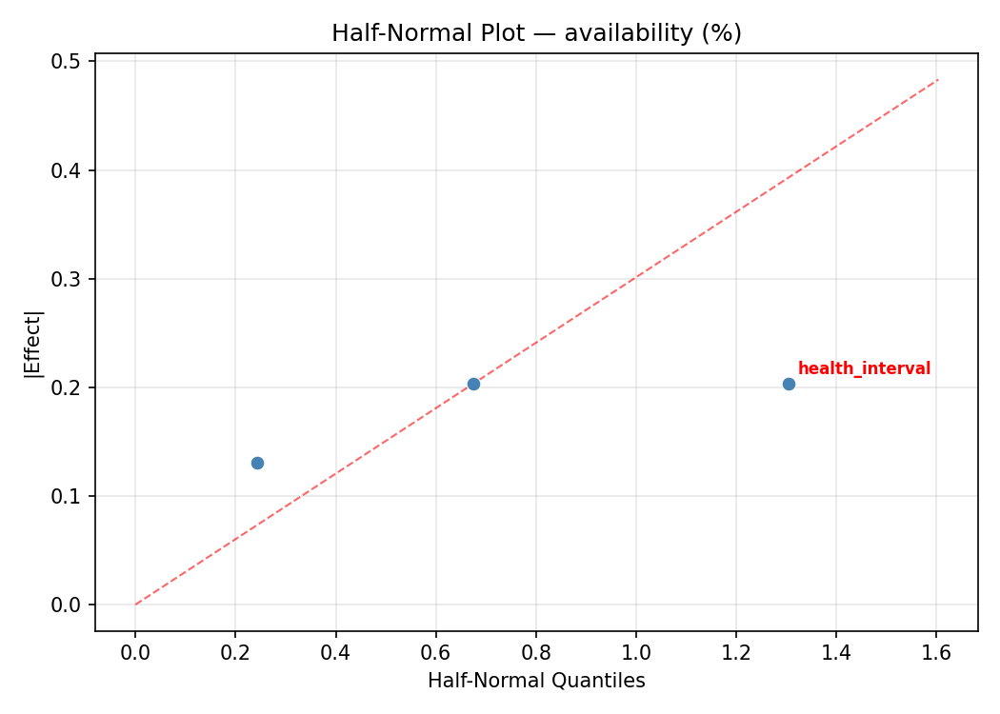
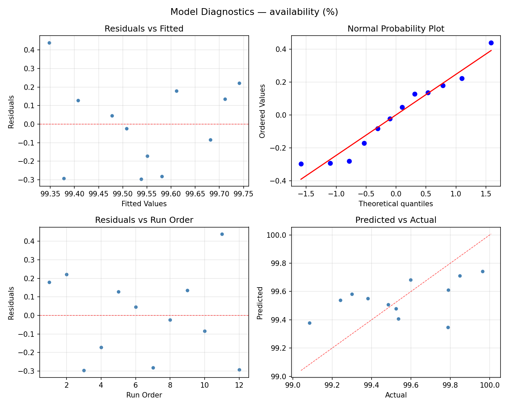
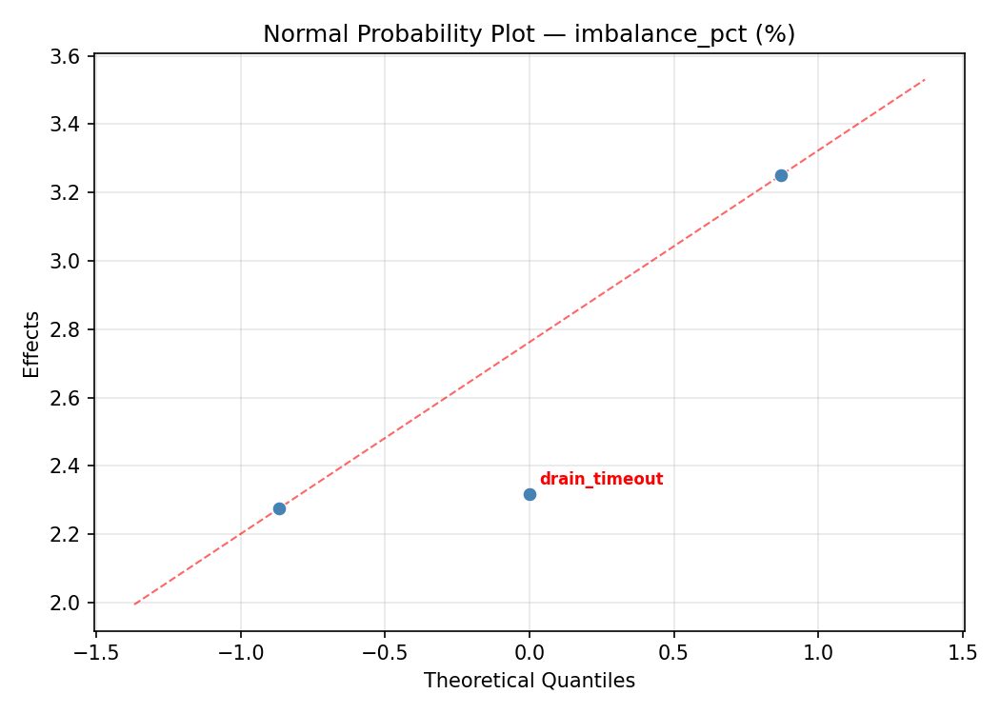
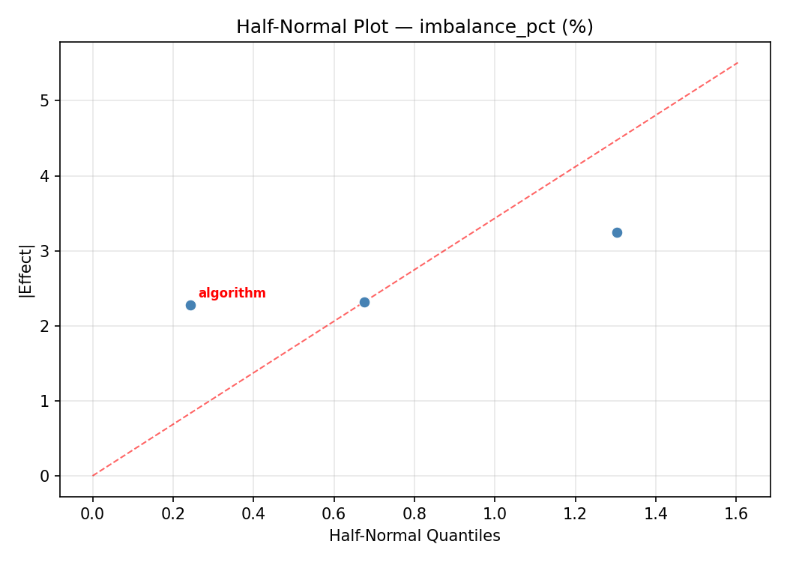
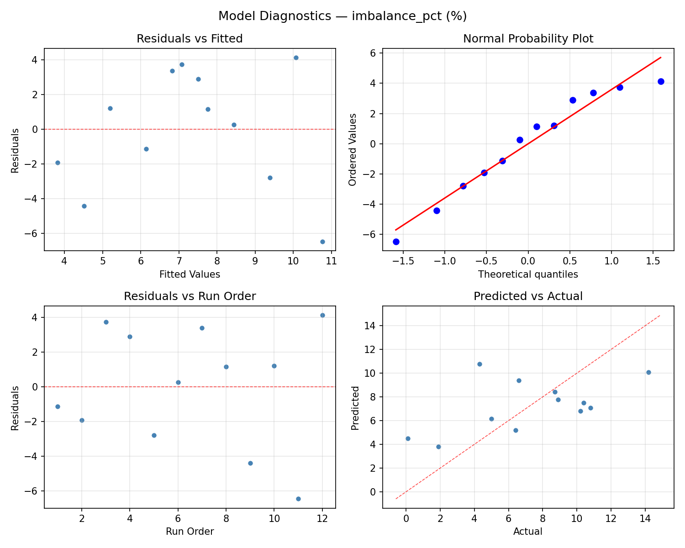

Summary
This experiment investigates load balancer algorithm. Full factorial of balancing algorithm, health check interval, and connection draining for availability.
The design varies 3 factors: algorithm, ranging from round_robin to ip_hash, health interval (s), ranging from 5 to 30, and drain timeout (s), ranging from 10 to 60. The goal is to optimize 2 responses: availability (%) (maximize) and imbalance pct (%) (minimize). Fixed conditions held constant across all runs include backend count = 4, protocol = http2.
A full factorial design was used to explore all 8 possible combinations of the 3 factors at two levels. This guarantees that every main effect and interaction can be estimated independently, at the cost of a larger experiment (12 runs).
Quadratic response surface models were fitted to capture potential curvature and factor interactions. The RSM contour plots below visualize how pairs of factors jointly affect each response.
Key Findings
For availability, the most influential factors were algorithm (52.6%), drain timeout (40.9%), health interval (6.5%). The best observed value was 99.963 (at algorithm = ip_hash, health interval = 5, drain timeout = 60).
For imbalance pct, the most influential factors were algorithm (50.8%), drain timeout (40.6%), health interval (8.5%). The best observed value was 0.1 (at algorithm = ip_hash, health interval = 30, drain timeout = 60).
Recommended Next Steps
- Consider whether any fixed factors should be varied in a future study.
Experimental Setup
Factors
| Factor | Low | High | Unit |
|---|
algorithm | round_robin | ip_hash | |
health_interval | 5 | 30 | s |
drain_timeout | 10 | 60 | s |
Fixed: backend_count = 4, protocol = http2
Responses
| Response | Direction | Unit |
|---|
availability | ↑ maximize | % |
imbalance_pct | ↓ minimize | % |
Configuration
{
"metadata": {
"name": "Load Balancer Algorithm",
"description": "Full factorial of balancing algorithm, health check interval, and connection draining for availability"
},
"factors": [
{
"name": "algorithm",
"levels": [
"round_robin",
"least_conn",
"ip_hash"
],
"type": "categorical",
"unit": ""
},
{
"name": "health_interval",
"levels": [
"5",
"30"
],
"type": "continuous",
"unit": "s"
},
{
"name": "drain_timeout",
"levels": [
"10",
"60"
],
"type": "continuous",
"unit": "s"
}
],
"fixed_factors": {
"backend_count": "4",
"protocol": "http2"
},
"responses": [
{
"name": "availability",
"optimize": "maximize",
"unit": "%"
},
{
"name": "imbalance_pct",
"optimize": "minimize",
"unit": "%"
}
],
"settings": {
"operation": "full_factorial",
"test_script": "use_cases/32_load_balancer_algorithm/sim.sh"
}
}
Experimental Matrix
The Full Factorial Design produces 12 runs. Each row is one experiment with specific factor settings.
| Run | algorithm | health_interval | drain_timeout |
|---|
| 1 | least_conn | 30 | 60 |
| 2 | least_conn | 5 | 60 |
| 3 | round_robin | 30 | 10 |
| 4 | ip_hash | 5 | 10 |
| 5 | ip_hash | 5 | 60 |
| 6 | least_conn | 30 | 10 |
| 7 | ip_hash | 30 | 60 |
| 8 | round_robin | 30 | 60 |
| 9 | least_conn | 5 | 10 |
| 10 | round_robin | 5 | 10 |
| 11 | round_robin | 5 | 60 |
| 12 | ip_hash | 30 | 10 |
Step-by-Step Workflow
1
Preview the design
$ python doe.py info --config use_cases/32_load_balancer_algorithm/config.json
2
Generate the runner script
$ python doe.py generate --config use_cases/32_load_balancer_algorithm/config.json \
--output use_cases/32_load_balancer_algorithm/results/run.sh --seed 42
3
Execute the experiments
$ bash use_cases/32_load_balancer_algorithm/results/run.sh
4
Analyze results
$ python doe.py analyze --config use_cases/32_load_balancer_algorithm/config.json
5
Get optimization recommendations
$ python doe.py optimize --config use_cases/32_load_balancer_algorithm/config.json
6
Multi-objective optimization
With 2 competing responses, use --multi to find the best compromise via Derringer–Suich desirability.
$ python doe.py optimize --config use_cases/32_load_balancer_algorithm/config.json --multi
7
Generate the HTML report
$ python doe.py report --config use_cases/32_load_balancer_algorithm/config.json \
--output use_cases/32_load_balancer_algorithm/results/report.html
Features Exercised
| Feature | Value |
|---|
| Design type | full_factorial |
| Factor types | continuous (2), categorical (1) |
| Arg style | double-dash |
| Responses | 2 (availability ↑, imbalance_pct ↓) |
| Total runs | 12 |
Analysis Results
Generated from actual experiment runs using the DOE Helper Tool.
Response: availability
Top factors: algorithm (52.6%), drain_timeout (40.9%), health_interval (6.5%).
ANOVA
| Source | DF | SS | MS | F | p-value |
|---|
| Source | DF | SS | MS | F | p-value |
| algorithm | 2 | 0.3646 | 0.1823 | 13.327 | 0.0062 |
| health_interval | 1 | 0.0082 | 0.0082 | 0.601 | 0.4678 |
| drain_timeout | 1 | 0.3267 | 0.3267 | 23.883 | 0.0027 |
| health_interval*drain_timeout | 1 | 0.0016 | 0.0016 | 0.119 | 0.7415 |
| Error | 6 | 0.0821 | 0.0137 | | |
| Total | 11 | 0.7832 | 0.0712 | | |
Pareto Chart

Main Effects Plot

Normal Probability Plot of Effects

Half-Normal Plot of Effects

Model Diagnostics

Response: imbalance_pct
Top factors: algorithm (50.8%), drain_timeout (40.6%), health_interval (8.5%).
ANOVA
| Source | DF | SS | MS | F | p-value |
|---|
| Source | DF | SS | MS | F | p-value |
| algorithm | 2 | 81.7617 | 40.8808 | 14.533 | 0.0050 |
| health_interval | 1 | 3.3075 | 3.3075 | 1.176 | 0.3199 |
| drain_timeout | 1 | 75.5008 | 75.5008 | 26.839 | 0.0021 |
| health_interval*drain_timeout | 1 | 1.5408 | 1.5408 | 0.548 | 0.4872 |
| Error | 6 | 16.8783 | 2.8131 | | |
| Total | 11 | 178.9892 | 16.2717 | | |
Pareto Chart

Main Effects Plot

Normal Probability Plot of Effects

Half-Normal Plot of Effects

Model Diagnostics

Response Surface Plots
3D surfaces fitted with quadratic RSM. Red dots are observed data points.
availability health interval vs drain timeout

imbalance pct health interval vs drain timeout

Multi-Objective Optimization
When responses compete, Derringer–Suich desirability finds the best compromise.
Each response is scaled to a 0–1 desirability, then combined via a weighted geometric mean.
Overall Desirability
D = 0.9063
Per-Response Desirability
| Response | Weight | Desirability | Predicted | Dir |
|---|
availability |
1.5 |
|
99.96 0.9545 99.96 % |
↑ |
imbalance_pct |
1.0 |
|
1.90 0.8385 1.90 % |
↓ |
Recommended Settings
| Factor | Value |
|---|
algorithm | least_conn |
health_interval | 5 s |
drain_timeout | 10 s |
Source: from observed run #2
Trade-off Summary
Sacrifice = how much worse than single-objective best.
| Response | Predicted | Best Observed | Sacrifice |
|---|
imbalance_pct | 1.90 | 0.10 | +1.80 |
Top 3 Runs by Desirability
| Run | D | Factor Settings |
|---|
| #9 | 0.8806 | algorithm=round_robin, health_interval=5, drain_timeout=10 |
| #11 | 0.7356 | algorithm=round_robin, health_interval=5, drain_timeout=60 |
Model Quality
| Response | R² | Type |
|---|
imbalance_pct | 0.2969 | linear |
Full Multi-Objective Output
============================================================
MULTI-OBJECTIVE OPTIMIZATION
Method: Derringer-Suich Desirability Function
============================================================
Overall desirability: D = 0.9063
Response Weight Desirability Predicted Direction
---------------------------------------------------------------------
availability 1.5 0.9545 99.96 % ↑
imbalance_pct 1.0 0.8385 1.90 % ↓
Recommended settings:
algorithm = least_conn
health_interval = 5 s
drain_timeout = 10 s
(from observed run #2)
Trade-off summary:
availability: 99.96 (best observed: 99.96, sacrifice: +0.00)
imbalance_pct: 1.90 (best observed: 0.10, sacrifice: +1.80)
Model quality:
availability: R² = 0.2471 (linear)
imbalance_pct: R² = 0.2969 (linear)
Top 3 observed runs by overall desirability:
1. Run #2 (D=0.9063): algorithm=least_conn, health_interval=5, drain_timeout=10
2. Run #9 (D=0.8806): algorithm=round_robin, health_interval=5, drain_timeout=10
3. Run #11 (D=0.7356): algorithm=round_robin, health_interval=5, drain_timeout=60
Full Analysis Output
=== Main Effects: availability ===
Factor Effect Std Error % Contribution
--------------------------------------------------------------
algorithm 0.4243 0.0770 52.6%
drain_timeout -0.3300 0.0770 40.9%
health_interval 0.0523 0.0770 6.5%
=== ANOVA Table: availability ===
Source DF SS MS F p-value
-----------------------------------------------------------------------------
algorithm 2 0.3646 0.1823 13.327 0.0062
health_interval 1 0.0082 0.0082 0.601 0.4678
drain_timeout 1 0.3267 0.3267 23.883 0.0027
health_interval*drain_timeout 1 0.0016 0.0016 0.119 0.7415
Error 6 0.0821 0.0137
Total 11 0.7832 0.0712
=== Interaction Effects: availability ===
Factor A Factor B Interaction % Contribution
------------------------------------------------------------------------
health_interval drain_timeout 0.0233 100.0%
=== Summary Statistics: availability ===
algorithm:
Level N Mean Std Min Max
------------------------------------------------------------
ip_hash 4 99.7705 0.2039 99.4850 99.9630
least_conn 4 99.3462 0.2210 99.0850 99.5350
round_robin 4 99.5168 0.2216 99.2990 99.7900
health_interval:
Level N Mean Std Min Max
------------------------------------------------------------
30 6 99.5183 0.2570 99.2410 99.9630
5 6 99.5707 0.2983 99.0850 99.8470
drain_timeout:
Level N Mean Std Min Max
------------------------------------------------------------
10 6 99.7095 0.1827 99.5240 99.9630
60 6 99.3795 0.2407 99.0850 99.7870
=== Main Effects: imbalance_pct ===
Factor Effect Std Error % Contribution
--------------------------------------------------------------
algorithm 6.2750 1.1645 50.8%
drain_timeout 5.0167 1.1645 40.6%
health_interval -1.0500 1.1645 8.5%
=== ANOVA Table: imbalance_pct ===
Source DF SS MS F p-value
-----------------------------------------------------------------------------
algorithm 2 81.7617 40.8808 14.533 0.0050
health_interval 1 3.3075 3.3075 1.176 0.3199
drain_timeout 1 75.5008 75.5008 26.839 0.0021
health_interval*drain_timeout 1 1.5408 1.5408 0.548 0.4872
Error 6 16.8783 2.8131
Total 11 178.9892 16.2717
=== Interaction Effects: imbalance_pct ===
Factor A Factor B Interaction % Contribution
------------------------------------------------------------------------
health_interval drain_timeout 0.7167 100.0%
=== Summary Statistics: imbalance_pct ===
algorithm:
Level N Mean Std Min Max
------------------------------------------------------------
ip_hash 4 3.8000 3.8105 0.1000 8.9000
least_conn 4 10.0750 3.2408 6.6000 14.2000
round_robin 4 8.0000 2.7178 5.0000 10.4000
health_interval:
Level N Mean Std Min Max
------------------------------------------------------------
30 6 7.8167 3.2726 1.9000 10.8000
5 6 6.7667 4.9423 0.1000 14.2000
drain_timeout:
Level N Mean Std Min Max
------------------------------------------------------------
10 6 4.7833 3.2109 0.1000 8.7000
60 6 9.8000 3.2230 4.3000 14.2000
Optimization Recommendations
=== Optimization: availability ===
Direction: maximize
Best observed run: #2
algorithm = ip_hash
health_interval = 5
drain_timeout = 60
Value: 99.963
RSM Model (linear, R² = 0.4657, Adj R² = 0.2654):
Coefficients:
intercept +99.5445
algorithm -0.2004
health_interval +0.0083
drain_timeout +0.0597
RSM Model (quadratic, R² = 0.6487, Adj R² = -0.9323):
Coefficients:
intercept +33.1579
algorithm -0.2004
health_interval +0.0083
drain_timeout +0.0597
algorithm*health_interval +0.0129
algorithm*drain_timeout -0.1171
health_interval*drain_timeout +0.0135
algorithm^2 +0.1061
health_interval^2 +33.1579
drain_timeout^2 +33.1579
Curvature analysis:
health_interval coef=+33.1579 convex (has a minimum)
drain_timeout coef=+33.1579 convex (has a minimum)
algorithm coef=+0.1061 convex (has a minimum)
Predicted optimum (from linear model, at observed points):
algorithm = ip_hash
health_interval = 30
drain_timeout = 60
Predicted value: 99.8129
Surface optimum (via L-BFGS-B, linear model):
algorithm = round_robin
health_interval = 30
drain_timeout = 60
Predicted value: 99.8129
Model quality: Weak fit — consider adding center points or using a different design.
Factor importance:
1. algorithm (effect: 0.4, contribution: 74.7%)
2. drain_timeout (effect: 0.1, contribution: 22.2%)
3. health_interval (effect: -0.0, contribution: 3.1%)
=== Optimization: imbalance_pct ===
Direction: minimize
Best observed run: #9
algorithm = ip_hash
health_interval = 30
drain_timeout = 60
Value: 0.1
RSM Model (linear, R² = 0.4590, Adj R² = 0.2562):
Coefficients:
intercept +7.2917
algorithm +2.8500
health_interval -0.3583
drain_timeout -1.1417
RSM Model (quadratic, R² = 0.7035, Adj R² = -0.6306):
Coefficients:
intercept +2.8917
algorithm +2.8500
health_interval -0.3583
drain_timeout -1.1417
algorithm*health_interval +0.2500
algorithm*drain_timeout +1.9000
health_interval*drain_timeout -0.4917
algorithm^2 -2.0750
health_interval^2 +2.8917
drain_timeout^2 +2.8917
Curvature analysis:
health_interval coef=+2.8917 convex (has a minimum)
drain_timeout coef=+2.8917 convex (has a minimum)
algorithm coef=-2.0750 concave (has a maximum)
Notable interactions:
algorithm*drain_timeout coef=+1.9000 (synergistic)
health_interval*drain_timeout coef=-0.4917 (antagonistic)
Predicted optimum (from linear model, at observed points):
algorithm = round_robin
health_interval = 5
drain_timeout = 10
Predicted value: 11.6417
Surface optimum (via L-BFGS-B, linear model):
algorithm = round_robin
health_interval = 30
drain_timeout = 60
Predicted value: 2.9417
Model quality: Weak fit — consider adding center points or using a different design.
Factor importance:
1. algorithm (effect: 5.7, contribution: 65.5%)
2. drain_timeout (effect: -2.3, contribution: 26.2%)
3. health_interval (effect: 0.7, contribution: 8.2%)